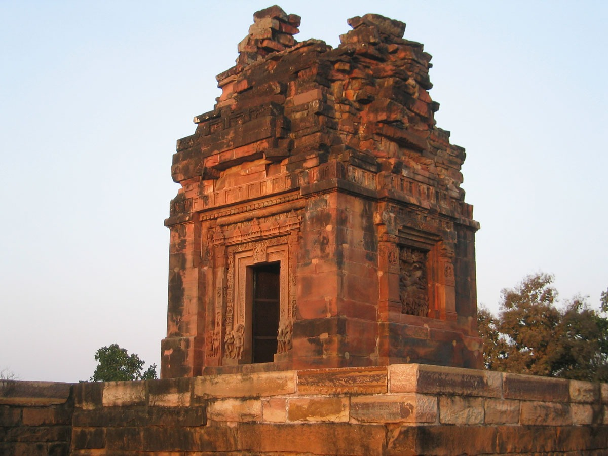
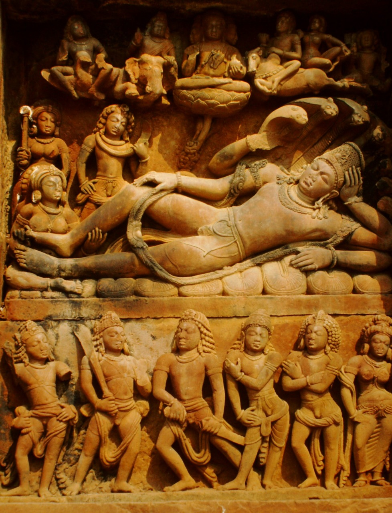
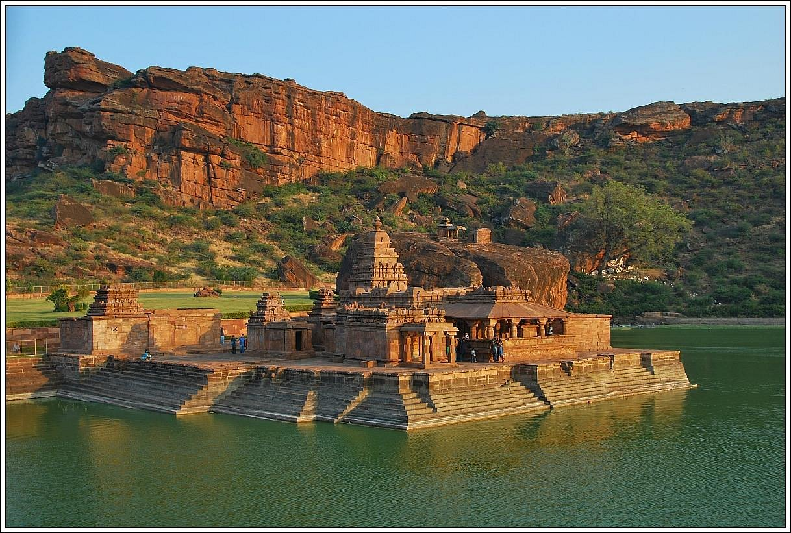
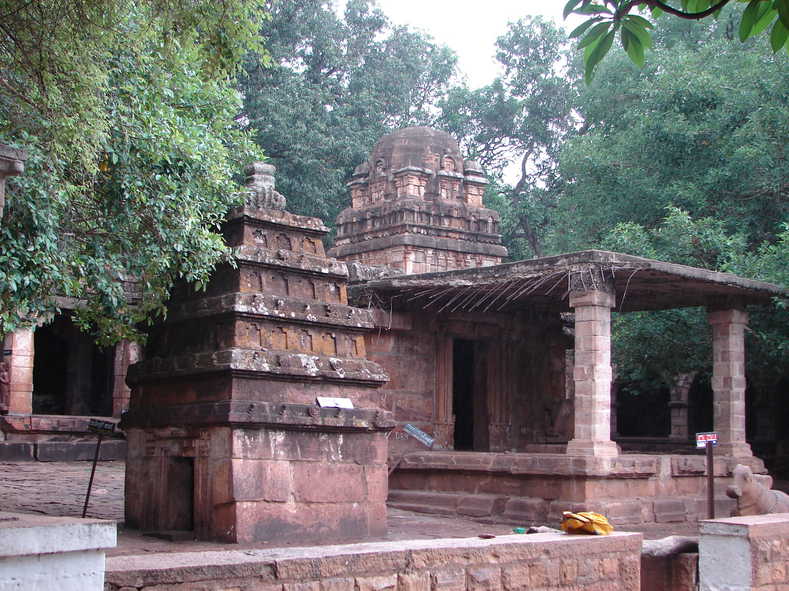
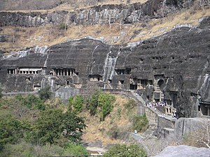
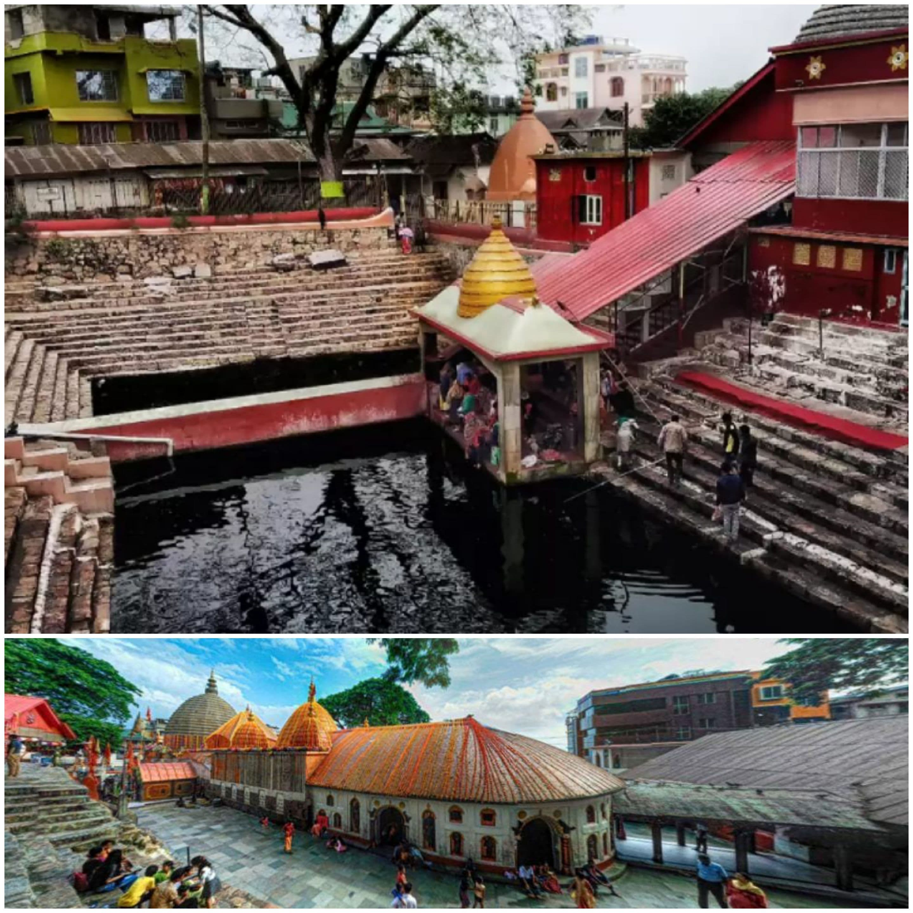
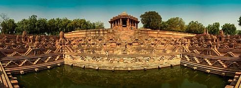
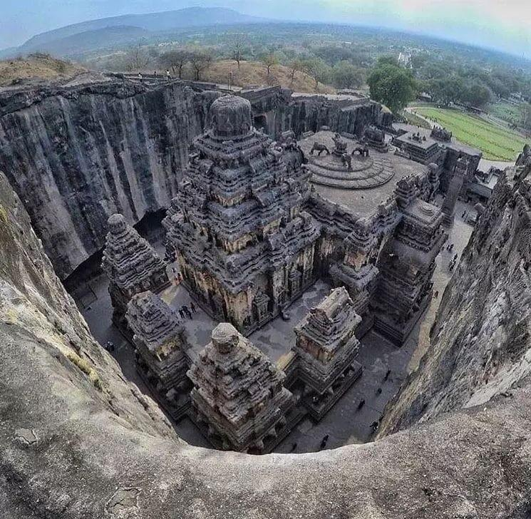

The 6th century late Gupta period Dashavatara temple Deogarh, Uttar Pradesh
Read more...
The Dashavatara Temple is an early 6th century Hindu temple located at Deogarh, Lalitpur district, Uttar Pradesh which is 125 kilometers from Jhansi, in the Betwa River valley in northern-central India.[3][4] It has a simple, one cell square plan and is one of the earliest Hindu stone temples still surviving today.[3][5] Built in the Gupta Period, the Dashavatara Temple at Deogarh shows the ornate Gupta style architecture.[6][7]
The temple at Deogarh is dedicated to Vishnu, but includes in it small footprint images of various deities such as Shiva, Parvati, Kartikeya, Brahma, Indra, the river goddesses Ganga and Yamuna, as well as a panel showing the five Pandavas of the Hindu epic Mahabharata.[3][4] The temple was built out of stone and masonry brick.[8] Legends associated with Vishnu are sculpted in the interior and exterior walls of the temple. Also carved are secular scenes and amorous couples in various stages of courtship and intimacy.[3][4]
According to Alexander Lubotsky, this temple was built according to the third khanda of the Hindu text Vishnudharmottara Purana, which describes the design and architecture of the Sarvatobhadra-style temple, thus providing a floruit for the text and likely temple tradition that existed in ancient India.[9] Though ruined, about:the temple is preserved in a good enough condition to be a key temple in the Hindu temple architecture scholarship, particularly the roots of the North Indian style of temple design.[4][10][11]
The Dashavatara temple is locally known as Sagar marh, which literally means "the temple on the tank", a name it gets from the square water pool cut into the rock in front.[1]

Vishnu sleeping,protected by shesha.
Read more...
The image depicts a panel of Sheshashayi Vishnu from the Dashavatara Temple in Deogarh, Uttar Pradesh, dating back to around 500 CE. This temple, dedicated to Vishnu, is one of the earliest surviving structural Hindu temples.
The panel portrays Vishnu reclining on the serpent Ananta, symbolizing eternity, during the interval between the dissolution and rebirth of the universe.
Above Vishnu, seated on a lotus leaf, is Brahma, the Hindu creator god.
Lakshmi, Vishnu's wife, is shown massaging his feet.
The Dashavatara Temple is considered the earliest known Panchyatana temple in North India and is noted for its Gupta-era sculptures.
The temple is located on the right bank of the Betwa River.
The site is protected and managed by the Archaeological Survey of India (ASI).

7th-to-8th-century Hindu temples complex
Read more...
The Bhutanatha group of temples are 7th to 12th century Hindu temples to the east of Agastya lake in Badami, Karnataka state, India. It consists of two subgroups – one called the East Bhutanatha group or Bhutanatha main group from 7th to 8th century mostly in the Dravida architecture style; the other called the North Bhutanatha group or Mallikarjuna group from 11th to 12th century mostly in the Nagara architecture.[1][2] The former illustrates the Badami Chalukya architects, the latter along with the nearby Yellamma temple the Kalyani Chalukya architects.[3]
Bhutanatha main group
Bhutanatha temples complex, floor plan (lake is to the left edge)
The Bhutanatha main group (700–725 CE) is the older set of Hindu shrines to the east of the Agastya Teertha. The oldest temple in this group is the main large temple. It has a gudha-mandapa with four massive central pillars (partly octagonal, cubical and rounded on a lathe). This mandapa connects to a smaller square-plan sanctum with a Shiva linga. On the top of the sanctum is the Dravida-style tritala superstructure (three storeys). The lower part consists of a padabandha and kumbha. The vimana walls has karnas with Brahmakanta-style pilasters. The wall's nasis depict heads of kinnaras and gandharvas. The second storey of the superstructure repeats the lowest larger storey, and the third storey is half of the second in size, and again repeats the same elements in a rhythmic form. A square vedi topped with a short shikhara completes the superstructure.[4]
The image niches on the wall of the shrine and the hall are now empty though some decorative elements like makharas (mythical beast) with long tails still remain.[5] The mandapa has jali (perforated windows for light into the inner mantapa).[1] On either side of the foot of the shrine doorway is an image of goddess Ganga on her vehicle, the makara, on the right, and on the left, that of goddesses Yamuna riding the tortoise. There is no dedicatory block upon the lintel.[1] Other artwork found nearby include Ganesha and Mahisasuramardini. A notable feature here is the inscription on the outer wall of the temple, which announces a gift from a Paingara family to the Sridharbuteswara (likely an epithet of the deity). This inscription can be dated to about the late 9th century. This suggests the main temple was in active use at the time.[4]
The porch pillars have a square cross section that transforms into an octagonal cross section. Outside, there is a stepped ghat for the devotees and pilgrims.[4] The smaller shrines are ruined and were added later, likely through late 8th century. To the east of the complex, on a boulder, are four Shaiva reliefs with unusual architectural details – these are impressions of four architectural styles of Shiva sanctum with panchakuta superstructure set on a square plan. These can be dated to the late 7th or early 8th century, and help establish that this temple complex was a Shaiva complex from its origin.[4]
To the north of the main temple is a small shrine which, proposed Henry Cousens in 1923, was originally consecrated for Vishnu. At some point, the temple was adopted by the followers of Lingayatism who built an outer hall and installed a Nandi (vehicle of Shiva) and a Shiva linga inside the sanctum.[5]

Mallikarjuna temple (at rear), a dravida style temple at Mahakuta.The temples are dates to 6Th and 7th century CE.
Read more...
The Mahakuta group of temples is located in Mahakuta, a village in the Bagalkot district of Karnataka state, India. It is an important place of worship for Hindus and the location of a well-known Shaiva monastery. The temples are dated to the 6th or 7th century CE and were constructed by the early kings of the Chalukya dynasty of Badami. The dating of the temples is based on the style of architecture which is similar to that of the temples in nearby Aihole[1] and the information in two notable inscriptions in the complex: the Mahakuta Pillar inscription dated between 595–602 CE (written in the Sanskrit language and Kannada script);[2] and an inscription of Vinapoti, a concubine of king Vijayaditya, dated between 696–733 CE and written in the Kannada language and script.[3]
Basic plan
The Karnataka artisans of the 7th century achieved a certain eclectism in their architecture by building south Indian dravida style temples adjacent to north Indian nagara style temples.[4] Further, their dravida and nagara styles were local, indigenous variants and unrelated to the architectural styles that prevailed in modern Tamil Nadu to the south, and Central India ("Madhyadesha") to the north.[5] They achieved this by combining the basic plan of one style with characteristics of the other. The dravida style temples here have a tiered tower over the shrine which is capped with a dome like structure. The nagara style temples use a curvilinear tower over a shrine which has a square plan, and is capped by a ribbed stone.[4] The development of this hybrid style, achieved by combining the typological features of the two basic architectural styles, is considered a peculiarity of the Karnataka region and defines the beginnings of the Vesara style of architecture.[6]
A natural mountain spring flows within the temple complex and feeds fresh water into a large tank called the Vishnu Pushkarni ("Lotus pool of god Vishnu") and an ablution tank called Papavinasha Tirtha ("Tank of Ablution"). Among the several shrines in the complex, the Mahakuteshvara temple, built in the dravida style, and the Mallikarjuna temple are the largest. There is a small shrine in the centre of the Vishnu Pushkarni tank and in it is a Shiva linga (universal symbol of god Shiva) called Panchamukha linga ("five faced linga"), one face for each direction and one on top.

The Ajanta Caves. It were built in two phases, from the 2nd century BCE to the 1st century CE, and again in the 5th and 6th centuries AD
Read more...
The Ajanta Caves are 30 rock-cut Buddhist cave monuments dating from the second century BCE to about 480 CE in Aurangabad district of Maharashtra state in India.[1][2][3] Ajanta Caves are a UNESCO World Heritage Site.[2] Universally regarded as masterpieces of Buddhist religious art, the caves include paintings and rock-cut sculptures described as among the finest surviving examples of ancient Indian art, particularly expressive paintings that present emotions through gesture, pose and form.[4][5][6]
The caves were built in two phases, the first starting around the second century BCE and the second occurring from 400 to 650 CE, according to older accounts, or in a brief period of 460–480 CE according to later scholarship.[7]
The Ajanta Caves constitute ancient monasteries (Viharas) and worship-halls (Chaityas) of different Buddhist traditions carved into a 75-metre (246 ft) wall of rock.[8][9] The caves also present paintings depicting the past lives [10] and rebirths of the Buddha, pictorial tales from Aryasura's Jatakamala, and rock-cut sculptures of Buddhist deities.[8][11][12] Textual records suggest that these caves served as a monsoon retreat for monks, as well as a resting site for merchants and pilgrims in ancient India.[8] While vivid colours and mural wall paintings were abundant in Indian history as evidenced by historical records, Caves 1, 2, 16 and 17 of Ajanta form the largest corpus of surviving ancient Indian wall-paintings.[13]
Panoramic view of Ajanta Caves from the nearby hill
The Ajanta Caves are mentioned in the memoirs of several medieval-era Chinese Buddhist travellers.[14] They were covered by jungle until accidentally "discovered" and brought to Western attention in 1819 by a colonial British officer Captain John Smith on a tiger-hunting party.[15] The caves are in the rocky northern wall of the U-shaped gorge of the River Waghur,[16] in the Deccan plateau.[17][18] Within the gorge are a number of waterfalls, audible from outside the caves when the river is high.[19]

The Kamakhya Temple
Read more...
The Kamakhya Temple at Nilachal hills in Guwahati, Assam is one of the oldest and most revered centres of Tantric practices,[3] dedicated to the goddess Kamakhya. The temple is the center of the Kulachara Tantra Marga and the site of the Ambubachi Mela, an annual festival that celebrates the menstruation of the goddess.[4] Structurally, the temple is dated to the 8th-9th century with many subsequent rebuildings[5]—and the final hybrid architecture defines a local style called Nilachal.[6] It is also one among the oldest 4 of the 51 pithas in the Shakta tradition.[7][8]

The Sun Temple of Modhera is a Hindu temple dedicated to the solar deity Surya
Read more...
Located at Modhera village of Mehsana district, Gujarat, India. It is situated on the bank of the river Pushpavati. It was built after 1026-27 CE during the reign of Bhima I of the Chaulukya dynasty. No worship is offered now and it is a protected monument maintained by the Archaeological Survey of India. The temple complex has three components: Gūḍhamanḍapa, the shrine hall; Sabhamanḍapa, the assembly hall and Kunḍa, the reservoir. The halls have intricately carved exterior and pillars. The reservoir has steps to reach the bottom and numerous small shrines.
History
Sun Temple of Modhera was earlier a part of Patan District in 2013 and later it was made a part of Mehsana District.
The shrine proper of the Sun Temple was built during the reign of Bhima I of Chaulukya dynasty.[A][1][2][3][4] Earlier, during 1024–1025, Mahmud of Ghazni had invaded Bhima's kingdom, and a force of around 20,000 soldiers had unsuccessfully tried to check his advance at Modhera. Historian A. K. Majumdar theorizes that the Sun Temple might have been built to commemorate this defense.[5] On a block in the western wall of the cella, there is an upside down inscription "Vikram Samvat 1083" carelessly incised in Devnagari script which correspond to 1026-1027 CE. No other date is found. As the inscription is upside down, it evidences the destruction and reconstruction of the cella. Due to the position of the inscription, it is not firmly considered as the date of construction. On the stylistic ground, it is known that the Kunda with its corner shrines was built earlier at the beginning of the 11th century. The inscription is considered as the date of destruction by Ghazni instead of the construction. Soon after Bhima had returned to power. So the temple proper, the miniature and the niche shrines in the tank were built shortly after 1026 CE. The dancing hall was added much later in the third quarter of the 12th century along with the gateways, the porch of the temple proper and the doorframes of the temple and the cella during the reign of the Karna.[6]

The Kailash (IAST: Kailasa) or Kailashanatha (IAST: Kailāśanātha) temple is the largest of the rock-cut Hindu temples at the Ellora
Read more...
The Kailash (IAST: Kailasa) or Kailashanatha (IAST: Kailāśanātha) temple is the largest of the rock-cut Hindu temples at the Ellora Caves in Chhatrapati Sambhajinagar district of Maharashtra, India.
A megalith carved into a cliff face, it is considered one of the most remarkable cave temples in the world because of its size, architecture, and sculptural treatment.[1] It has been called "the climax of the rock-cut phase of Indian architecture".[2] The top of the structure over the sanctuary is 32.6 metres (107 ft) above the level of the court below.[3] Although the rock face slopes downwards from the rear of the temple to the front, archaeologists believe it was sculpted from a single rock.[4]
The Kailasa temple (Cave 16) is the largest of the 34 Hindu, Buddhist, and Jain cave temples and monasteries known collectively as the Ellora Caves, ranging for over two kilometres (1.2 mi) along the sloping basalt cliff at the site.[5] Most of the excavation of the temple is generally attributed to the eighth century Rashtrakuta king Krishna I (r. c. 756 – 773), with some elements completed later. The temple architecture shows traces of Pallava and Chalukya styles. The temple contains a number of relief and free-standing sculptures on a grand scale equal to the architecture, though only traces remain of the paintings which originally decorated it.